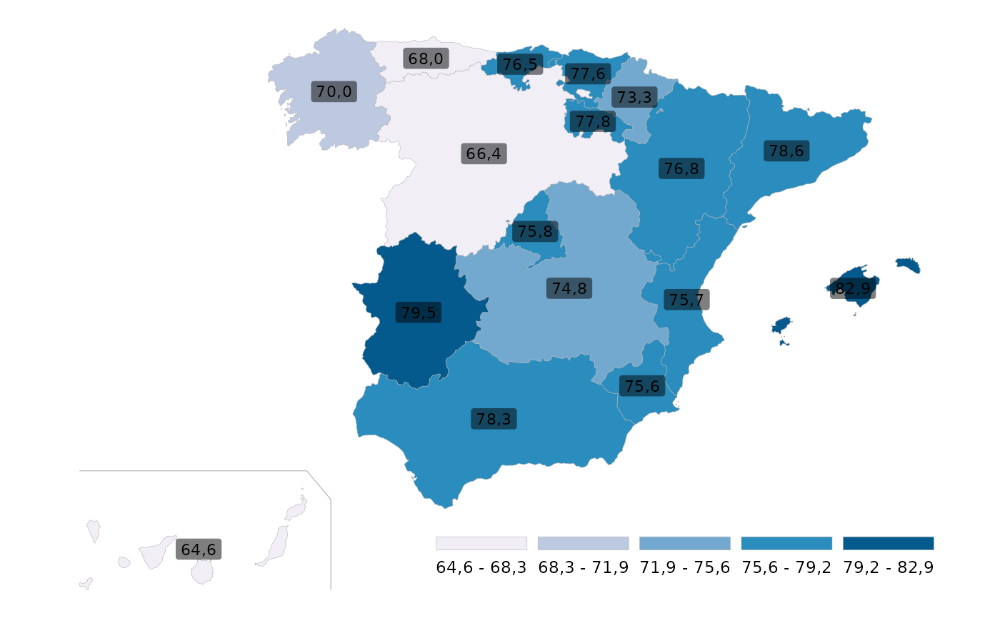

Representa valores por comunidad autónoma mediante un mapa coroplético de España. Los datos se relacionan con la cartografía mediante el código de comunidad autónoma.
Usage
grafico_mapa_ccaa(
datos,
codigo = "cod_ccaa",
valor = "valor",
titulo = NULL,
titulo_leyenda = NULL,
paleta = "PuBu",
n_clases = 5L,
accuracy = 0.1,
canarias = c("linea", "recuadro", "ninguno"),
incluir_ceuta_melilla = FALSE
)Arguments
- datos
Un
data.framecon los datos que se desean representar.- codigo
Cadena de texto con el nombre de la columna que contiene el código de comunidad autónoma. Por defecto,
"cod_ccaa".- valor
Cadena de texto con el nombre de la variable numérica que se desea representar. Por defecto,
"valor".- titulo
Título del gráfico. Por defecto,
NULL.- titulo_leyenda
Título de la leyenda. Por defecto,
NULL.- paleta
Nombre de una paleta secuencial de RColorBrewer. Por defecto,
"PuBu".- n_clases
Número de intervalos utilizados para clasificar los valores. Por defecto,
5.- accuracy
Precisión de las etiquetas mostradas sobre el mapa. Por defecto,
0.1.- canarias
Elemento utilizado para señalar la posición desplazada de Canarias. Puede ser
"linea","recuadro"o"ninguno".- incluir_ceuta_melilla
Si es
TRUE, mantiene Ceuta y Melilla en el mapa. Por defecto,FALSE.
Details
Canarias se muestran desplazadas junto a la Península. El usuario puede añadir una línea, un recuadro o ningún elemento auxiliar alrededor de ellas.
Cada comunidad autónoma debe tener como máximo una observación. La función no agrega observaciones ni calcula valores territoriales.
Examples
datos_ejemplo <- data.frame(
cod_ccaa = sprintf("%02d", 1:17),
valor = c(
78.3, 76.8, 68.0, 82.9, 64.6, 76.5,
66.4, 74.8, 78.6, 75.7, 79.5, 70.0,
75.8, 75.6, 73.3, 77.6, 77.8
)
)
p <- grafico_mapa_ccaa(
datos_ejemplo
)
#> Warning: The `label.size` argument of `geom_label()` is deprecated as of ggplot2 3.5.0.
#> ℹ Please use the `linewidth` argument instead.
#> ℹ The deprecated feature was likely used in the indicaR package.
#> Please report the issue at <https://github.com/vpergim/indicaR/issues>.
p

if (FALSE) { # \dontrun{
listado <- listar_indicadores()
indicador <- "TERRITORIO_A_05"
info <- info_indicador(indicador)
info$metadata[[2]]
datos <- consultar_indicador(
indicador,
tipo_territorio = "ccaa",
anyo = 2024
)
grafico_mapa_ccaa(
datos,
titulo = "Tasa bruta de natalidad (2024)"
) +
ggplot2::theme(
plot.title = ggplot2::element_text(face = "bold")
)
} # }